S1mp1e
玻璃，
是新的介面。
液態玻璃 Minecraft 啟動器與客戶端
1.8.9 到 26.2，免費、開源
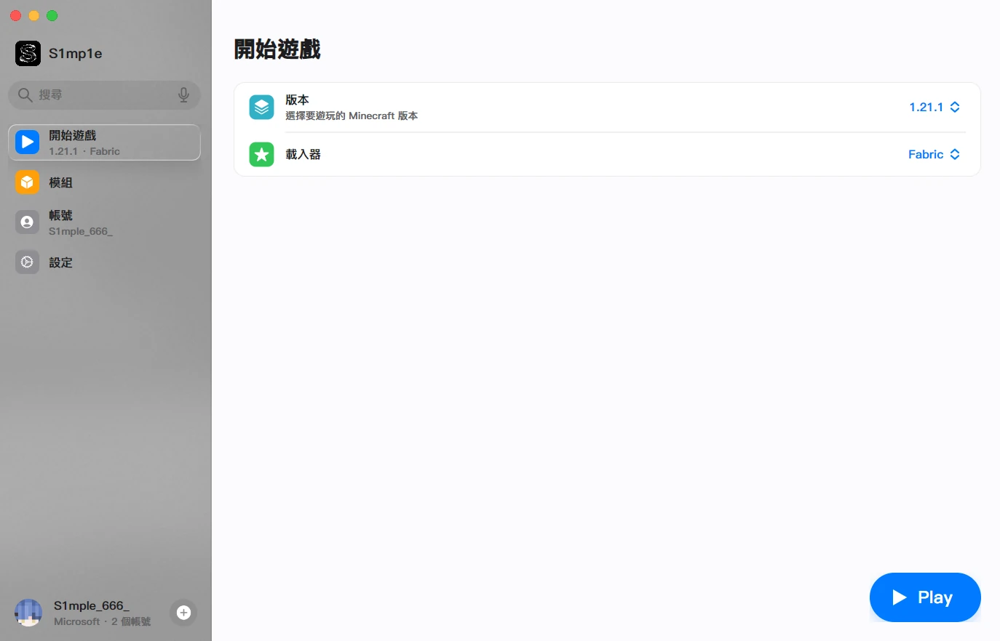
重點看這裡。
在 GitHub 看原始碼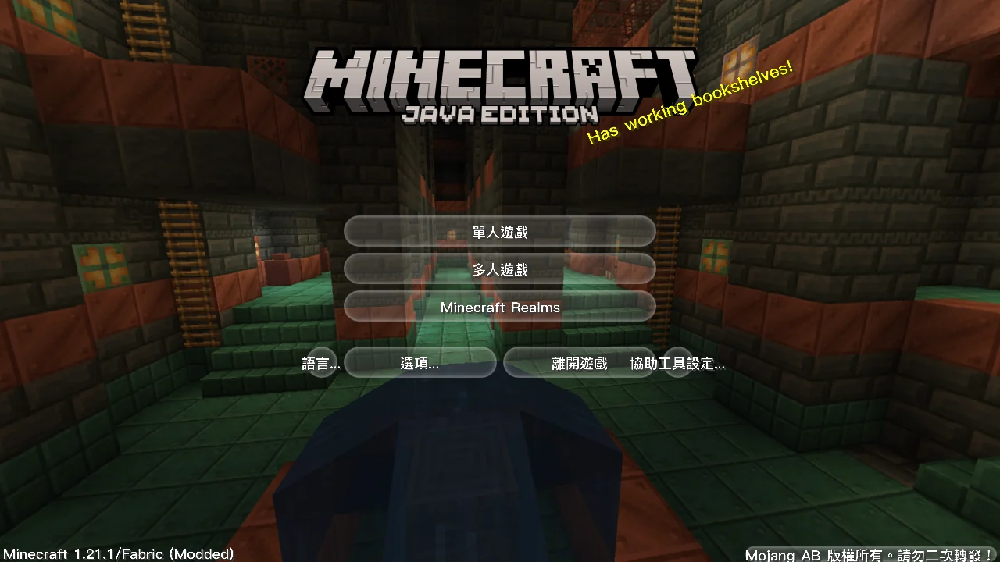
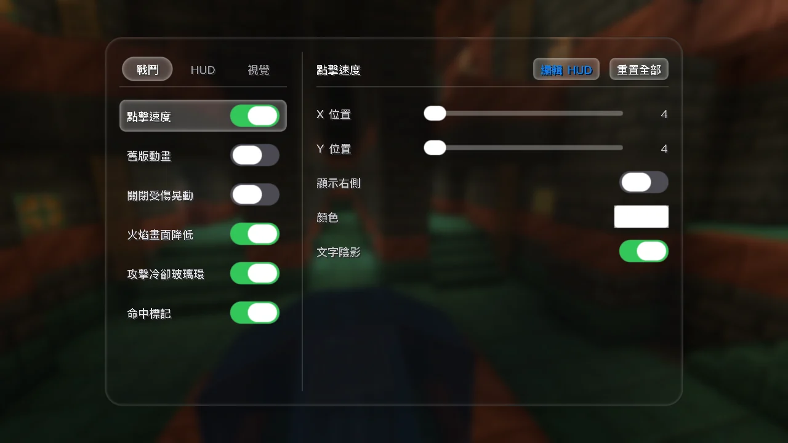
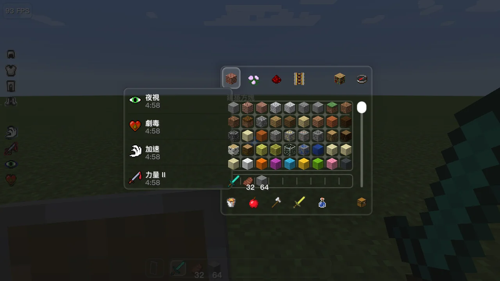
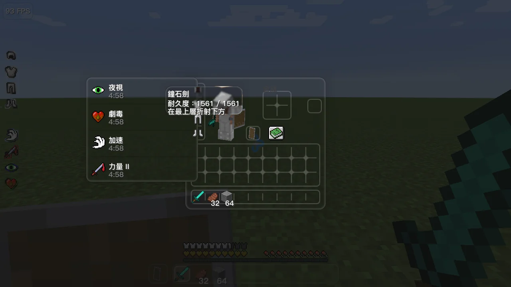
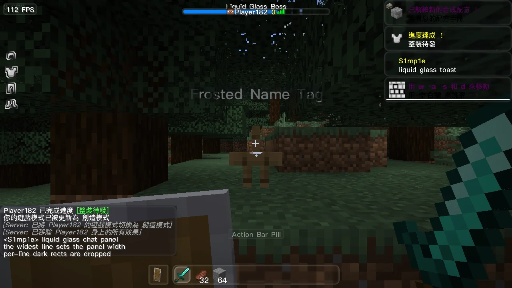
液態玻璃
真的會
折射。
折射集中在邊緣，照 r(d) = S · max(1 − d/D, 0)p 往內衰減，越靠邊越彎，中間保持清楚。拖著玻璃走一圈，S、D、p 都能自己調。
戰鬥三件套
看得見的
攻擊節奏。
攻擊冷卻環、命中標記、火焰降低，每一項都有整排能調的設定。只改畫面，不碰任何判定。
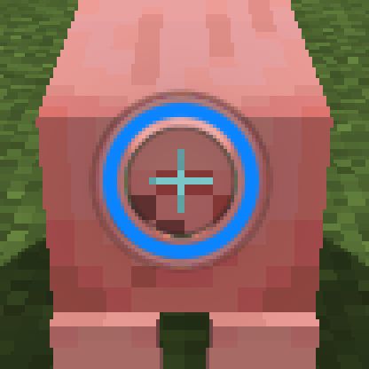
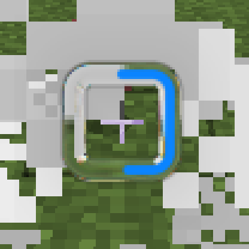
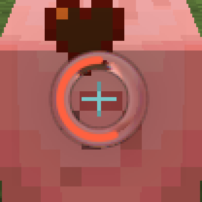
冷卻環。蓄力時沿著玻璃軌道填滿，蓄滿又對準生物就換成另一個形狀和顏色。大小、粗細、方向、位置都能調。1.8.9 沒有攻擊冷卻，所以這一項從 1.12.2 開始。
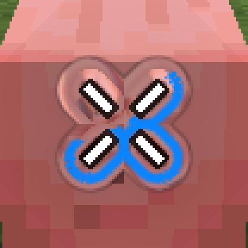
遊戲內實拍：準星轉 45° 時，玻璃跟著轉。
包覆準星。玻璃會照你的準星大小、間隙、粗細和旋轉包上去。間隙夠大，就分成四段各自包住。這個示範和遊戲裡用的是同一套形狀算法。
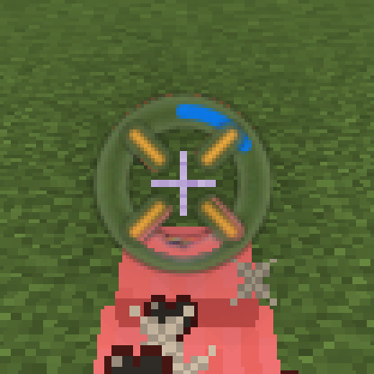
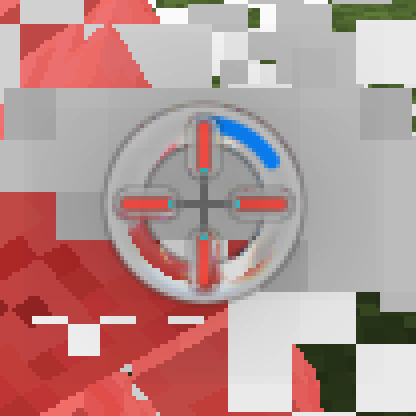
命中標記。打中時準星旁彈出四段玻璃刻度，暴擊變橘色，擊殺變紅色。可以只顯示暴擊，也能換成十字形，調大小、間距和彈出感。
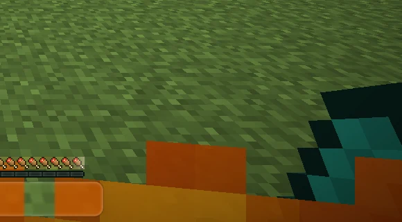
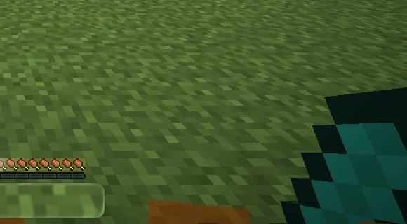
火焰降低。著火時火焰往下移、變淡，還看得出在燒，但不擋視線。也可以整個隱藏，或只在有抗火時隱藏。
每個模組，
都只為畫面而生。
按一下 Right Shift，
全部都能調。
在遊戲裡的玻璃設定面板開關、拉滑桿，HUD 的位置直接用滑鼠拖。
HUD
- 裝備欄
- 藥水欄
- 座標顯示
- 幀率顯示
- 背包預覽
- 按鍵顯示
- 隱藏飽食度
- 彩虹 HUD
畫面
- 準星
- 方塊外框
- 全亮
- 手部位置
- 固定視野
- 經驗條流動
- 視野縮放
戰鬥
- 攻擊冷卻玻璃環新
- 命中標記新
- 火焰畫面降低新
- 點擊速度
- 關閉受傷晃動
- 舊版動畫
啟動器
搜、點、玩。
Modrinth 全站直搜，中文翻譯簡介，相容性自動判斷。Java、Fabric 或 Forge、玻璃模組全部幫你裝好，你只要按 Play。
開始遊戲。選版本、選載入器，按 Play。缺什麼啟動器自己補，玻璃模組有新版本也會自動更新。
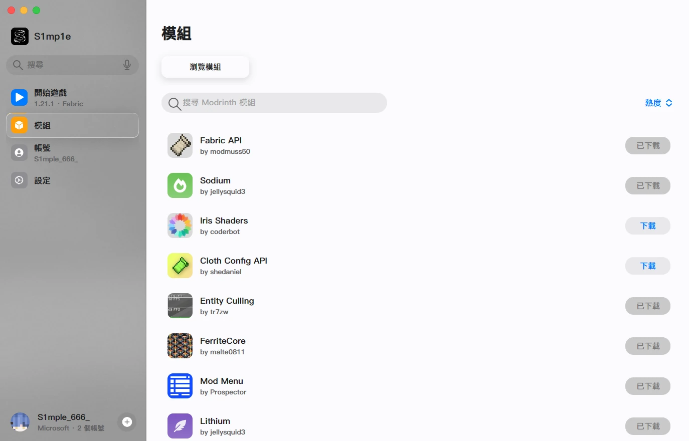
模組。直接搜 Modrinth，一鍵下載。每個 Minecraft 版本的模組分開放，不會互相打架。
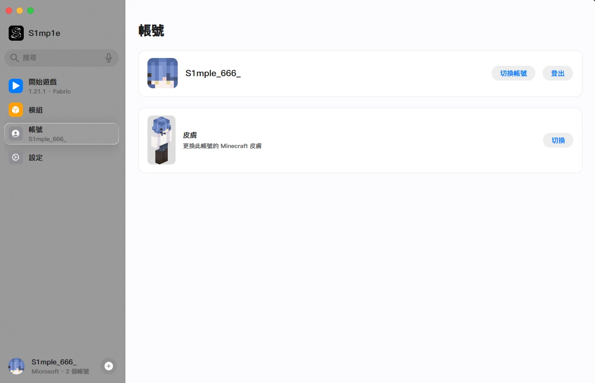
帳號。一組代碼就登入 Microsoft 帳號，多帳號切換，皮膚 PNG 拖進來就換。
十年，
一個啟動器。
從 1.8.9 到 26.2，每一版都是同一套玻璃。要用哪個載入器，啟動器自己挑對。
常見問題
要付費嗎？
不用。S1mp1e 完全免費，原始碼以 MIT 授權放在 GitHub 上。
支援哪些系統？
啟動器目前只有 Windows 10 和 11 的安裝版。
會影響遊戲判定嗎？
不會。所有模組都只影響你看到的介面和 HUD，不改攻擊距離、判定、封包或任何遊戲邏輯。不過有些伺服器禁止所有客戶端模組，進伺服器前請先看它的規則。
可以用自己的啟動器嗎？
可以。每個版本的玻璃模組 jar 都在 GitHub 的 glass-mods 資料夾。Fabric 版需要搭配同版本的 Fabric API，1.8.9 和 1.12.2 是 Forge 版。